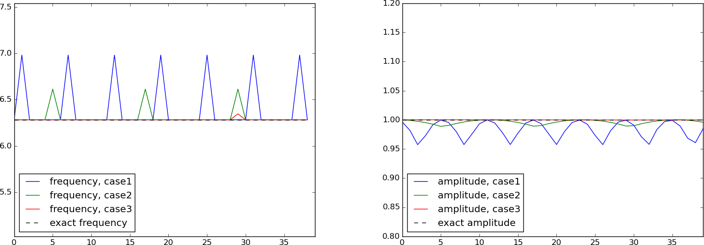

Vibration problems lead to differential equations with solutions that oscillate in time, typically in a damped or undamped sinusoidal fashion. Such solutions put certain demands on the numerical methods compared to other phenomena whose solutions are monotone or very smooth. Both the frequency and amplitude of the oscillations need to be accurately handled by the numerical schemes. Most of the reasoning and specific building blocks introduced in the forthcoming text can be reused to construct sound methods for partial differential equations of wave nature in multiple spatial dimensions.
(hpl 1: Need to discuss errors also for the damped and nonlinear models. At least the frequency errors must be illustrated here as well and investigated numerically, either in text or exercises.)
Finite difference discretization
Many of the numerical challenges faced when computing oscillatory solutions to ODEs and PDEs can be captured by the very simple ODE \( u^{\prime\prime} + u =0 \). This ODE is thus chosen as our starting point for method development, implementation, and analysis.
A basic model for vibrations
A system that vibrates without damping and external forcing can be described by the ODE problem $$ \begin{equation} u^{\prime\prime} + \omega^2u = 0,\quad u(0)=I,\ u^{\prime}(0)=0,\ t\in (0,T] \tp \tag{1} \end{equation} $$ Here, \( \omega \) and \( I \) are given constants. The exact solution of (1) is $$ \begin{equation} u(t) = I\cos (\omega t) \tp \tag{2} \end{equation} $$ That is, \( u \) oscillates with constant amplitude \( I \) and angular frequency \( \omega \). The corresponding period of oscillations (i.e., the time between two neighboring peaks in the cosine function) is \( P=2\pi/\omega \). The number of periods per second is \( f=\omega/(2\pi) \) and measured in the unit Hz. Both \( f \) and \( \omega \) are referred to as frequency, but \( \omega \) is more precisely named angular frequency, measured in rad/s.
In vibrating mechanical systems modeled by (1), \( u(t) \) very often represents a position or a displacement of a particular point in the system. The derivative \( u^{\prime}(t) \) then has the interpretation of velocity, and \( u^{\prime\prime}(t) \) is the associated acceleration. The model (1) is not only applicable to vibrating mechanical systems, but also to oscillations in electrical circuits.
A centered finite difference scheme
To formulate a finite difference method for the model problem (1) we follow the four steps explained in [1].
Step 1: Discretizing the domain
The domain is discretized by introducing a uniformly partitioned time mesh. The points in the mesh are \( t_n=n\Delta t \), \( n=0,1,\ldots,N_t \), where \( \Delta t = T/N_t \) is the constant length of the time steps. We introduce a mesh function \( u^n \) for \( n=0,1,\ldots,N_t \), which approximates the exact solution at the mesh points. The mesh function will be computed from algebraic equations derived from the differential equation problem.
Step 2: Fulfilling the equation at discrete time points
The ODE is to be satisfied at each mesh point: $$ \begin{equation} u^{\prime\prime}(t_n) + \omega^2u(t_n) = 0,\quad n=1,\ldots,N_t \tp \tag{3} \end{equation} $$
Step 3: Replacing derivatives by finite differences
The derivative \( u^{\prime\prime}(t_n) \) is to be replaced by a finite difference approximation. A common second-order accurate approximation to the second-order derivative is $$ \begin{equation} u^{\prime\prime}(t_n) \approx \frac{u^{n+1}-2u^n + u^{n-1}}{\Delta t^2} \tp \tag{4} \end{equation} $$ Inserting (4) in (3) yields $$ \begin{equation} \frac{u^{n+1}-2u^n + u^{n-1}}{\Delta t^2} = -\omega^2 u^n \tp \tag{5} \end{equation} $$
We also need to replace the derivative in the initial condition by a finite difference. Here we choose a centered difference, whose accuracy is similar to the centered difference we used for \( u^{\prime\prime} \): $$ \begin{equation} \frac{u^1-u^{-1}}{2\Delta t} = 0 \tag{6} \tp \end{equation} $$
Step 4: Formulating a recursive algorithm
To formulate the computational algorithm, we assume that we have already computed \( u^{n-1} \) and \( u^n \) such that \( u^{n+1} \) is the unknown value, which we can readily solve for: $$ \begin{equation} u^{n+1} = 2u^n - u^{n-1} - \Delta t^2\omega^2 u^n \tp \tag{7} \end{equation} $$ The computational algorithm is simply to apply (7) successively for \( n=1,2,\ldots,N_t-1 \). This numerical scheme sometimes goes under the name Stormer's method or Verlet integration.
Computing the first step
We observe that (7) cannot be used for \( n=0 \) since the computation of \( u^1 \) then involves the undefined value \( u^{-1} \) at \( t=-\Delta t \). The discretization of the initial condition then comes to our rescue: (6) implies \( u^{-1} = u^1 \) and this relation can be combined with (7) for \( n=1 \) to yield a value for \( u^1 \): $$ \begin{equation*} u^1 = 2u^0 - u^{1} - \Delta t^2 \omega^2 u^0,\end{equation*} $$ which reduces to $$ \begin{equation} u^1 = u^0 - \half \Delta t^2 \omega^2 u^0 \tp \tag{8} \end{equation} $$ Exercise 5: Use a Taylor polynomial to compute \( u^1 \) asks you to perform an alternative derivation and also to generalize the initial condition to \( u^{\prime}(0)=V\neq 0 \).
The computational algorithm
The steps for solving (1) becomes
The algorithm is more precisely expressed directly in Python:
t = linspace(0, T, Nt+1) # mesh points in time
dt = t[1] - t[0] # constant time step
u = zeros(Nt+1) # solution
u[0] = I
u[1] = u[0] - 0.5*dt**2*w**2*u[0]
for n in range(1, Nt):
u[n+1] = 2*u[n] - u[n-1] - dt**2*w**2*u[n]
w for \( \omega \).
In the code, we use w as the symbol for \( \omega \).
The reason is that this author prefers w for readability
and comparison with the mathematical \( \omega \) instead of
the full word omega as variable name.
Operator notation
We may write the scheme using a compact difference notation (see also examples in [1]). The difference (4) has the operator notation \( [D_tD_t u]^n \) such that we can write: $$ \begin{equation} [D_tD_t u + \omega^2 u = 0]^n \tp \tag{9} \end{equation} $$ Note that \( [D_tD_t u]^n \) means applying a central difference with step \( \Delta t/2 \) twice: $$ [D_t(D_t u)]^n = \frac{[D_t u]^{n+\half} - [D_t u]^{n-\half}}{\Delta t}$$ which is written out as $$ \frac{1}{\Delta t}\left(\frac{u^{n+1}-u^n}{\Delta t} - \frac{u^{n}-u^{n-1}}{\Delta t}\right) = \frac{u^{n+1}-2u^n + u^{n-1}}{\Delta t^2} \tp $$
The discretization of initial conditions can in the operator notation be expressed as $$ \begin{equation} [u = I]^0,\quad [D_{2t} u = 0]^0, \end{equation} $$ where the operator \( [D_{2t} u]^n \) is defined as $$ \begin{equation} [D_{2t} u]^n = \frac{u^{n+1} - u^{n-1}}{2\Delta t} \tp \end{equation} $$
Implementation
Making a solver function
The algorithm from the previous section is readily translated to a complete Python function for computing and returning \( u^0,u^1,\ldots,u^{N_t} \) and \( t_0,t_1,\ldots,t_{N_t} \), given the input \( I \), \( \omega \), \( \Delta t \), and \( T \):
from numpy import *
from matplotlib.pyplot import *
def solver(I, w, dt, T):
"""
Solve u'' + w**2*u = 0 for t in (0,T], u(0)=I and u'(0)=0,
by a central finite difference method with time step dt.
"""
dt = float(dt)
Nt = int(round(T/dt))
u = zeros(Nt+1)
t = linspace(0, Nt*dt, Nt+1)
u[0] = I
u[1] = u[0] - 0.5*dt**2*w**2*u[0]
for n in range(1, Nt):
u[n+1] = 2*u[n] - u[n-1] - dt**2*w**2*u[n]
return u, t
We do a simple from module import * to make the code as close as
possible to MATLAB, although good programming habits would prefix
the numpy and matplotlib calls by (abbreviations of) the module
name.
(hpl 2: Refer to right section in decay book for prefix discussion.)
A function for plotting the numerical and the exact solution is also convenient to have:
def u_exact(t, I, w):
return I*cos(w*t)
def visualize(u, t, I, w):
plot(t, u, 'r--o')
t_fine = linspace(0, t[-1], 1001) # very fine mesh for u_e
u_e = u_exact(t_fine, I, w)
hold('on')
plot(t_fine, u_e, 'b-')
legend(['numerical', 'exact'], loc='upper left')
xlabel('t')
ylabel('u')
dt = t[1] - t[0]
title('dt=%g' % dt)
umin = 1.2*u.min(); umax = -umin
axis([t[0], t[-1], umin, umax])
savefig('tmp1.png'); savefig('tmp1.pdf')
A corresponding main program calling these functions for a simulation
of a given number of periods (num_periods) may take the form
I = 1
w = 2*pi
dt = 0.05
num_periods = 5
P = 2*pi/w # one period
T = P*num_periods
u, t = solver(I, w, dt, T)
visualize(u, t, I, w, dt)
Adjusting some of the input parameters via the command line can be
handy. Here is a code segment using the ArgumentParser tool in
the argparse module to define option value (--option value)
pairs on the command line:
import argparse
parser = argparse.ArgumentParser()
parser.add_argument('--I', type=float, default=1.0)
parser.add_argument('--w', type=float, default=2*pi)
parser.add_argument('--dt', type=float, default=0.05)
parser.add_argument('--num_periods', type=int, default=5)
a = parser.parse_args()
I, w, dt, num_periods = a.I, a.w, a.dt, a.num_periods
Such parsing of the command line is explained in more detailed in the "section on user interfaces": "..." in [1].
(hpl 3: Fix reference to web document.)
A typical execution goes like
Terminal> python vib_undamped.py --num_periods 20 --dt 0.1
Computing \( u^{\prime} \)
In mechanical vibration applications one is often interested in computing the velocity \( v(t)=u^{\prime}(t) \) after \( u(t) \) has been computed. This can be done by a central difference, $$ \begin{equation} v(t_n)=u^{\prime}(t_n) \approx v^n = \frac{u^{n+1}-u^{n-1}}{2\Delta t} = [D_{2t}u]^n \tp \end{equation} $$ This formula applies for all inner mesh points, \( n=1,\ldots,N_t-1 \). For \( n=0 \), \( v(0) \) is given by the initial condition on \( u^{\prime}(0) \), and for \( n=N_t \) we can use a one-sided, backward difference: $$ v^n=[D_t^-u]^n = \frac{u^{n} - u^{n-1}}{\Delta t}\tp$$
Typical (scalar) code is
v = np.zeros_like(u) # or v = np.zeros(len(u))
# Use central difference for internal points
for i in range(1, len(u)-1):
v[i] = (u[i+1] - u[i-1])/(2*dt)
# Use initial condition for u'(0) when i=0
v[0] = 0
# Use backward difference at the final mesh point
v[-1] = (u[-1] - u[-2])/dt
We can get rid of the loop, which is slow for large \( N_t \), by vectorizing the central difference. The above code segment goes as follows in its vectorized version:
v = np.zeros_like(u)
v[1:-1] = (u[2:] - u[:-2])/(2*dt) # central difference
v[0] = 0 # boundary condition u'(0)
v[-1] = (u[-1] - u[-2])/dt # backward difference
Verification
Manual calculation
The simplest type of verification, which is also instructive for understanding
the algorithm, is to compute \( u^1 \), \( u^2 \), and \( u^3 \)
with the aid of a calculator
and make a function for comparing these results with those from the solver
function. The test_three_steps function in
the file vib_undamped.py
shows the details how we use the hand calculations to test the code:
def test_three_steps():
I = 1; w = 2*pi; dt = 0.1; T = 1
u_by_hand = array([1.000000000000000,
0.802607911978213,
0.288358920740053])
u, t = solver(I, w, dt, T)
diff = abs(u_by_hand - u[:3]).max()
tol = 1E-14
assert diff < tol
Testing very simple solutions
Constructing test problems where the exact solution is constant or linear helps initial debugging and verification as one expects any reasonable numerical method to reproduce such solutions to machine precision. Second-order accurate methods will often also reproduce a quadratic solution. Here \( [D_tD_tt^2]^n=2 \), which is the exact result. A solution \( u=t^2 \) leads to \( u^{\prime\prime}+\omega^2 u=2 + (\omega t)^2\neq 0 \). We must therefore add a source in the equation: \( u^{\prime\prime} + \omega^2 u = f \) to allow a solution \( u=t^2 \) for \( f=(\omega t)^2 \). By simple insertion we can show that the mesh function \( u^n = t_n^2 \) is also a solution of the discrete equations. Problem 1: Use linear/quadratic functions for verification asks you to carry out all details to show that linear and quadratic solutions are solutions of the discrete equations. Such results are very useful for debugging and verification. You are strongly encouraged to do this problem now!
Checking convergence rates
Empirical computation of convergence rates yields a good method for verification. The method and its computational are explained in detail for a simple ODE model in the section on computing convergence rates in [1]. Readers not familiar with the concept should look up this reference before proceeding.
In the present problem, computing convergence rates means that we must
- perform \( m \) simulations with halved time steps: \( \Delta t_i=2^{-i}\Delta t_0 \), \( i=0,\ldots,m-1 \),
- compute the \( L^2 \) norm of the error, \( E_i=\sqrt{\Delta t_i\sum_{n=0}^{N_t-1}(u^n-\uex(t_n))^2} \) in each case,
- estimate the convergence rates \( r_i \) based on two consecutive experiments \( (\Delta t_{i-1}, E_{i-1}) \) and \( (\Delta t_{i}, E_{i}) \), assuming \( E_i=C(\Delta t_i)^{r} \) and \( E_{i-1}=C(\Delta t_{i-1})^{r} \). From these equations it follows that \( r = \ln (E_{i-1}/E_i)/\ln (\Delta t_{i-1}/\Delta t_i) \). Since this \( r \) will vary with \( i \), we equip it with an index and call it \( r_{i-1} \), where \( i \) runs from \( 1 \) to \( m-1 \).
All the implementational details of computing the sequence \( r_0,r_1,\ldots,r_{m-2} \) appear below.
def convergence_rates(m, solver_function, num_periods=8):
"""
Return m-1 empirical estimates of the convergence rate
based on m simulations, where the time step is halved
for each simulation.
solver_function(I, w, dt, T) solves each problem, where T
is based on simulation for num_periods periods.
"""
w = 0.35; I = 0.3 # just chosen values
P = 2*pi/w # period
dt = P/30 # 30 time step per period 2*pi/w
T = P*num_periods
dt_values = []
E_values = []
for i in range(m):
u, t = solver_function(I, w, dt, T)
u_e = u_exact(t, I, w)
E = sqrt(dt*sum((u_e-u)**2))
dt_values.append(dt)
E_values.append(E)
dt = dt/2
r = [log(E_values[i-1]/E_values[i])/
log(dt_values[i-1]/dt_values[i])
for i in range(1, m, 1)]
return r
The expected convergence rate is 2, because we have used a second-order finite difference approximations \( [D_tD_tu]^n \) to the ODE and a second-order finite difference formula for the initial condition for \( u^{\prime} \). Other theoretical error measures also points to \( r=2 \).
In the present problem, when \( \Delta t_0 \) corresponds to 30 time steps
per period, the returned r list has all its values equal to 2.00
(if rounded to two decimals). This amazing result means that all
\( \Delta t_i \) values are well into the asymptotic regime where the
error model \( E_i = C(\Delta t_i)^r \) is valid.
We can now construct a test function that computes convergence rates and checks that the final (and usually the best) estimate is sufficiently close to 2. Here, a rough tolerance of 0.1 is enough. This unit test goes like
def test_convergence_rates():
r = convergence_rates(m=5, solver_function=solver, num_periods=8)
# Accept rate to 1 decimal place
tol = 0.1
assert abs(r[-1] - 2.0) < tol
The complete code appears in the file vib_undamped.py.
Scaled model
(hpl 4: Need reference to scaling book and maybe also decay book.)
It is advantageous to use dimensionless variables in simulations, because fewer parameters need to be set. The present problem is made dimensionless by introducing dimensionless variables \( \bar t = t/t_c \) and \( \bar u = u/u_c \), where \( t_c \) and \( u_c \) are characteristic scales for \( t \) and \( u \), respectively. The scaled ODE problem reads $$ \frac{u_c}{t_c^2}\frac{d^2\bar u}{d\bar t^2} + u_c\bar u = 0,\quad u_c\bar u(0) = I,\ \frac{u_c}{t_c}\frac{d\bar u}{d\bar t}(0)=0\tp$$ A common choice is to take \( t_c \) as one period of the oscillations, \( t_c = 2\pi/w \), and \( u_c=I \). This gives the dimensionless model $$ \begin{equation} \frac{d^2\bar u}{\bar t^2} + 4\pi^2 \bar u = 0,\quad \bar u(0)=1,\ \bar u^{\prime}(0)=0\tp \tag{10} \end{equation} $$ Observe that there are no physical parameters in (10)! We can therefore perform a single numerical simulation \( \bar u(\bar t) \) and afterwards recover any \( u(t; \omega, I) \) by $$ u(t;\omega, I) = u_c\bar u(t/t_c) = I\bar u(omega t/(2\pi))\tp$$
We can easily check this assertion: the solution of the scaled problem is \( \bar u(\bar t) = \cos(2\pi\bar t) \). The formula for \( u \) in terms of \( \bar u \) gives \( u = I\cos(\omega t) \), which is nothing but the solution of the original problem with dimensions.
The scaled model can by run by calling solver(I=1, w=2*pi, dt, T).
Each period is now 1 and T simply counts the number of periods.
Choosing dt as 1./M gives M time steps per period.
Long time simulations
Figure 1 shows a comparison of the exact and numerical solution for the scaled model (10) with \( \Delta t=0.1, 0.05 \). From the plot we make the following observations:
- The numerical solution seems to have correct amplitude.
- There is a angular frequency error which is reduced by reducing the time step.
- The total angular frequency error grows with time.
Figure 1: Effect of halving the time step.

Using a moving plot window
In vibration problems it is often of interest to investigate the system's
behavior over long time intervals. Errors in the angular frequency accumulate
and become more visible as time grows. We can investigate long
time series by introducing a moving plot window that can move along with
the \( p \) most recently computed periods of the solution. The
SciTools package contains
a convenient tool for this: MovingPlotWindow. Typing
pydoc scitools.MovingPlotWindow shows a demo and a description of its use.
The function below utilizes the moving plot window and is in fact
called by the main function the vib_undamped module
if the number of periods in the simulation exceeds 10.
def visualize_front(u, t, I, w, savefig=False, skip_frames=1):
"""
Visualize u and the exact solution vs t, using a
moving plot window and continuous drawing of the
curves as they evolve in time.
Makes it easy to plot very long time series.
Plots are saved to files if savefig is True.
Only each skip_frames-th plot is saved (e.g., if
skip_frame=10, only each 10th plot is saved to file;
this is convenient if plot files corresponding to
different time steps are to be compared).
"""
import scitools.std as st
from scitools.MovingPlotWindow import MovingPlotWindow
# Remove all old plot files tmp_*.png
import glob, os
for filename in glob.glob('tmp_*.png'):
os.remove(filename)
P = 2*pi/w # one period
umin = 1.2*u.min(); umax = -umin
dt = t[1] - t[0]
plot_manager = MovingPlotWindow(
window_width=8*P,
dt=dt,
yaxis=[umin, umax],
mode='continuous drawing')
frame_counter = 0
for n in range(1,len(u)):
if plot_manager.plot(n):
s = plot_manager.first_index_in_plot
st.plot(t[s:n+1], u[s:n+1], 'r-1',
t[s:n+1], I*cos(w*t)[s:n+1], 'b-1',
title='t=%6.3f' % t[n],
axis=plot_manager.axis(),
show=not savefig) # drop window if savefig
if savefig and n % skip_frames == 0:
filename = 'tmp_%04d.png' % frame_counter
st.savefig(filename)
print 'making plot file', filename, 'at t=%g' % t[n]
frame_counter += 1
plot_manager.update(n)
We run the scaled problem (the default values for the command-line arguments
--I and --w correspond to the scaled problem) for 40 periods with 20
time steps per period:
Terminal> python vib_undamped.py --dt 0.05 --num_periods 40
The moving plot window is invoked, and we can follow the numerical and exact solutions as time progresses. From this demo we see that the angular frequency error is small in the beginning, but it becomes more prominent with time. A new run with \( \Delta t=0.1 \) (i.e., only 10 time steps per period) clearly shows that the phase errors become significant even earlier in the time series, deteriorating the solution further.
Making animations
Producing standard video formats
The visualize_front function stores all the plots in
files whose names are numbered:
tmp_0000.png, tmp_0001.png, tmp_0002.png,
and so on. From these files we may make a movie. The Flash
format is popular,
Terminal> ffmpeg -r 12 -i tmp_%04d.png -c:v flv movie.flv
The ffmpeg program can be replaced by the avconv program in
the above command if desired (but at the time of this writing it seems
to be more momentum in the ffmpeg project).
The -r option should come first and
describes the number of frames per second in the movie. The
-i option describes the name of the plot files.
Other formats can be generated by changing the video codec
and equipping the video file with the right extension:
| Format | Codec and filename |
| Flash | -c:v flv movie.flv |
| MP4 | -c:v libx264 movie.mp4 |
| WebM | -c:v libvpx movie.webm |
| Ogg | -c:v libtheora movie.ogg |
The video file can be played by some video player like vlc, mplayer,
gxine, or totem, e.g.,
Terminal> vlc movie.webm
A web page can also be used to play the movie. Today's standard is
to use the HTML5 video tag:
<video autoplay loop controls
width='640' height='365' preload='none'>
<source src='movie.webm' type='video/webm; codecs="vp8, vorbis"'>
</video>
Modern browsers do not support all of the video formats. MP4 is needed to successfully play the videos on Apple devices that use the Safari browser. WebM is the preferred format for Chrome, Opera, Firefox, and Internet Explorer v9+. Flash was a popular format, but older browsers that required Flash can play MP4. All browsers that work with Ogg can also work with WebM. This means that to have a video work in all browsers, the video should be available in the MP4 and WebM formats. The proper HTML code reads
<video autoplay loop controls
width='640' height='365' preload='none'>
<source src='movie.mp4' type='video/mp4;
codecs="avc1.42E01E, mp4a.40.2"'>
<source src='movie.webm' type='video/webm;
codecs="vp8, vorbis"'>
</video>
The MP4 format should appear first to ensure that Apple devices will load the video correctly.
%04d specifies an
integer in a field of width 4, padded with zeros from the left.
A simple Unix wildcard file specification like tmp_*.png
will then list the frames in the right order. If the numbers in the
filenames were not zero-padded, the frame tmp_11.png would appear
before tmp_2.png in the movie.
Paying PNG files in a web browser
The scitools movie command can create a movie player for a set
of PNG files such that a web browser can be used to watch the movie.
This interface has the advantage that the speed of the movie can
easily be controlled, a feature that scientists often appreciate.
The command for creating an HTML with a player for a set of
PNG files tmp_*.png goes like
Terminal> scitools movie output_file=vib.html fps=4 tmp_*.png
The fps argument controls the speed of the movie ("frames per second").
To watch the movie, load the video file vib.html into some browser, e.g.,
Terminal> google-chrome vib.html # invoke web page
Clicking on Start movie to see the result. Moving this movie to
some other place requires moving vib.html and all the PNG files
tmp_*.png:
Terminal> mkdir vib_dt0.1
Terminal> mv tmp_*.png vib_dt0.1
Terminal> mv vib.html vib_dt0.1/index.html
Making animated GIF files
The convert program from the ImageMagick software suite can be
used to produce animated GIF files from a set of PNG files:
Terminal> convert -delay 25 tmp_vib*.png tmp_vib.gif
The -delay option needs an argument of the delay between each frame,
measured in 1/100 s, so 4 frames/s here gives 25/100 s delay.
Note, however, that in this particular example
with \( \Delta t=0.05 \) and 40 periods,
making an animated GIF file out of
the large number of PNG files is a very heavy process and not
considered feasible.
(hpl 5: Combine two simulations side by side!)
Using a line-by-line ascii plotter
Plotting functions vertically, line by line, in the terminal window
using ascii characters only is a simple, fast, and convenient
visualization technique for long time series. Note that the time
axis then is positive downwards on the screen.
The tool
scitools.avplotter.Plotter makes it easy to create such plots:
def visualize_front_ascii(u, t, I, w, fps=10):
"""
Plot u and the exact solution vs t line by line in a
terminal window (only using ascii characters).
Makes it easy to plot very long time series.
"""
from scitools.avplotter import Plotter
import time
P = 2*pi/w
umin = 1.2*u.min(); umax = -umin
p = Plotter(ymin=umin, ymax=umax, width=60, symbols='+o')
for n in range(len(u)):
print p.plot(t[n], u[n], I*cos(w*t[n])), \
'%.1f' % (t[n]/P)
time.sleep(1/float(fps))
if __name__ == '__main__':
main()
raw_input()
The call p.plot returns a line of text, with the \( t \) axis marked and
a symbol + for the first function (u) and o for the second
function (the exact solution). Here we append to this text
a time counter reflecting how many periods the current time point
corresponds to. A typical output (\( \omega =2\pi \), \( \Delta t=0.05 \))
looks like this:
| o+ 14.0
| + o 14.0
| + o 14.1
| + o 14.1
| + o 14.2
+| o 14.2
+ | 14.2
+ o | 14.3
+ o | 14.4
+ o | 14.4
+o | 14.5
o + | 14.5
o + | 14.6
o + | 14.6
o + | 14.7
o | + 14.7
| + 14.8
| o + 14.8
| o + 14.9
| o + 14.9
| o+ 15.0
Empirical analysis of the solution
For oscillating functions like those in Figure 1 we may compute the amplitude and frequency (or period) empirically. That is, we run through the discrete solution points \( (t_n, u_n) \) and find all maxima and minima points. The distance between two consecutive maxima (or minima) points can be used as estimate of the local period, while half the difference between the \( u \) value at a maximum and a nearby minimum gives an estimate of the local amplitude.
The local maxima are the points where $$ \begin{equation} u^{n-1} < u^n > u^{n+1},\quad n=1,\ldots,N_t-1, \end{equation} $$ and the local minima are recognized by $$ \begin{equation} u^{n-1} > u^n < u^{n+1},\quad n=1,\ldots,N_t-1 \tp \end{equation} $$ In computer code this becomes
def minmax(t, u):
minima = []; maxima = []
for n in range(1, len(u)-1, 1):
if u[n-1] > u[n] < u[n+1]:
minima.append((t[n], u[n]))
if u[n-1] < u[n] > u[n+1]:
maxima.append((t[n], u[n]))
return minima, maxima
Note that the two returned objects are lists of tuples.
Let \( (t_i, e_i) \), \( i=0,\ldots,M-1 \), be the sequence of all the \( M \) maxima points, where \( t_i \) is the time value and \( e_i \) the corresponding \( u \) value. The local period can be defined as \( p_i=t_{i+1}-t_i \). With Python syntax this reads
def periods(maxima):
p = [extrema[n][0] - maxima[n-1][0]
for n in range(1, len(maxima))]
return np.array(p)
The list p created by a list comprehension is converted to an array
since we probably want to compute with it, e.g., find the corresponding
frequencies 2*pi/p.
Having the minima and the maxima, the local amplitude can be calculated as the difference between two neighboring minimum and maximum points:
def amplitudes(minima, maxima):
a = [(abs(maxima[n][1] - minima[n][1]))/2.0
for n in range(min(len(minima),len(maxima)))]
return np.array(a)
The code segments are found in the file vib_empirical_analysis.py.
Since a[i] and p[i] correspond to
the \( i \)-th amplitude estimate and the \( i \)-th period estimate, respectively,
it is most convenient to visualize the a and p values with the
index i on the horizontal axis.
(There is no unique time point associated with either of these estimate
since values at two different time points were used in the
computations.)
In the analysis of very long time series, it is advantageous to
compute and plot p and a instead of \( u \) to get an impression of
the development of the oscillations. Let us do this for the scaled
problem and \( \Delta t=0.1, 0.05, 0.01 \).
A ready-made function
plot_empirical_freq_and_amplitude(u, t, I, w)
computes the empirical amplitudes and periods, and creates a plot
where the amplitudes and angular frequencies
are visualized together with the exact amplitude I
and the exact angular frequency w. We can make a little program
for creating the plot:
from vib_undamped import solver, plot_empirical_freq_and_amplitude
from math import pi
dt_values = [0.1, 0.05, 0.01]
u_cases = []
t_cases = []
for dt in dt_values:
# Simulate scaled problem for 40 periods
u, t = solver(I=1, w=2*pi, dt=dt, T=40)
u_cases.append(u)
t_cases.append(t)
plot_empirical_freq_and_amplitude(u_cases, t_cases, I=1, w=2*pi)
Figure 2 shows the result: we clearly see that lowering \( \Delta t \) improves the angular frequency significantly, while the amplitude seems to be more accurate. The lines with \( \Delta t=0.01 \), corresponding to 100 steps per period, can hardly be distinguished from the exact values. The next section shows how we can get mathematical insight into why amplitudes are good and frequencies are more inaccurate.
Figure 2: Empirical amplitude and angular frequency for three cases of time steps.

Analysis of the numerical scheme
Deriving a solution of the numerical scheme
After having seen the phase error grow with time in the previous section, we shall now quantify this error through mathematical analysis. The key tool in the analysis will be to establish an exact solution of the discrete equations. The difference equation (7) has constant coefficients and is homogeneous. Such equations are known to have solutions on the form \( u^n=CA^n \), where \( A \) is some number to be determined from the difference equation and \( C \) is found as the initial condition (\( C=I \)). Recall that \( n \) in \( u^n \) is a superscript labeling the time level, while \( n \) in \( A^n \) is an exponent.
With oscillating functions as solutions, the algebra will be considerably simplified if we seek an \( A \) on the form $$ A=e^{i\tilde\omega \Delta t},$$ and solve for the numerical frequency \( \tilde\omega \) rather than \( A \). Note that \( i=\sqrt{-1} \) is the imaginary unit. (Using a complex exponential function gives simpler arithmetics than working with a sine or cosine function.) We have $$ A^n = e^{i\tilde\omega \Delta t\, n}=e^{i\tilde\omega t} = \cos (\tilde\omega t) + i\sin(\tilde \omega t) \tp $$ The physically relevant numerical solution can be taken as the real part of this complex expression.
The calculations go as
$$
\begin{align*}
[D_tD_t u]^n &= \frac{u^{n+1} - 2u^n + u^{n-1}}{\Delta t^2}\\
&= I\frac{A^{n+1} - 2A^n + A^{n-1}}{\Delta t^2}\\
&= \frac{I}{\Delta t^{2}}(e^{i\tilde\omega(t+\Delta t)} - 2e^{i\tilde\omega t} + e^{i\tilde\omega(t-\Delta t)})\\
&= Ie^{i\tilde\omega t}\frac{1}{\Delta t^2}\left(e^{i\tilde\omega\Delta t} + e^{i\tilde\omega(-\Delta t)} - 2\right)\\
&= Ie^{i\tilde\omega t}\frac{2}{\Delta t^2}\left(\cosh(i\tilde\omega\Delta t) -1 \right)\\
&= Ie^{i\tilde\omega t}\frac{2}{\Delta t^2}\left(\cos(\tilde\omega\Delta t) -1 \right)\\
&= -Ie^{i\tilde\omega t}\frac{4}{\Delta t^2}\sin^2(\frac{\tilde\omega\Delta t}{2})
\end{align*}
$$
The last line follows from the relation
\( \cos x - 1 = -2\sin^2(x/2) \) (try cos(x)-1 in
wolframalpha.com to see the formula).
The scheme (7) with \( u^n=Ie^{i\omega\tilde\Delta t\, n} \) inserted now gives $$ \begin{equation} -Ie^{i\tilde\omega t}\frac{4}{\Delta t^2}\sin^2(\frac{\tilde\omega\Delta t}{2}) + \omega^2 Ie^{i\tilde\omega t} = 0, \end{equation} $$ which after dividing by \( Ie^{i\tilde\omega t} \) results in $$ \begin{equation} \frac{4}{\Delta t^2}\sin^2(\frac{\tilde\omega\Delta t}{2}) = \omega^2 \tp \end{equation} $$ The first step in solving for the unknown \( \tilde\omega \) is $$ \sin^2(\frac{\tilde\omega\Delta t}{2}) = \left(\frac{\omega\Delta t}{2}\right)^2 \tp $$ Then, taking the square root, applying the inverse sine function, and multiplying by \( 2/\Delta t \), results in $$ \begin{equation} \tilde\omega = \pm \frac{2}{\Delta t}\sin^{-1}\left(\frac{\omega\Delta t}{2}\right) \tp \tag{11} \end{equation} $$
The first observation of (11) tells that there is a phase error since the numerical frequency \( \tilde\omega \) never equals the exact frequency \( \omega \). But how good is the approximation (11)? That is, what is the error \( \omega - \tilde\omega \) or \( \tilde\omega/\omega \)? Taylor series expansion for small \( \Delta t \) may give an expression that is easier to understand than the complicated function in (11):
>>> from sympy import *
>>> dt, w = symbols('dt w')
>>> w_tilde_e = 2/dt*asin(w*dt/2)
>>> w_tilde_series = w_tilde_e.series(dt, 0, 4)
>>> print w_tilde_series
w + dt**2*w**3/24 + O(dt**4)
This means that
$$ \begin{equation} \tilde\omega = \omega\left( 1 + \frac{1}{24}\omega^2\Delta t^2\right) + \Oof{\Delta t^4} \tp \tag{12} \end{equation} $$ The error in the numerical frequency is of second-order in \( \Delta t \), and the error vanishes as \( \Delta t\rightarrow 0 \). We see that \( \tilde\omega > \omega \) since the term \( \omega^3\Delta t^2/24 >0 \) and this is by far the biggest term in the series expansion for small \( \omega\Delta t \). A numerical frequency that is too large gives an oscillating curve that oscillates too fast and therefore "lags behind" the exact oscillations, a feature that can be seen in the left plot in Figure 1.
Figure 3 plots the discrete frequency (11) and its approximation (12) for \( \omega =1 \) (based on the program vib_plot_freq.py). Although \( \tilde\omega \) is a function of \( \Delta t \) in (12), it is misleading to think of \( \Delta t \) as the important discretization parameter. It is the product \( \omega\Delta t \) that is the key discretization parameter. This quantity reflects the number of time steps per period of the oscillations. To see this, we set \( P=N_P\Delta t \), where \( P \) is the length of a period, and \( N_P \) is the number of time steps during a period. Since \( P \) and \( \omega \) are related by \( P=2\pi/\omega \), we get that \( \omega\Delta t = 2\pi/N_P \), which shows that \( \omega\Delta t \) is directly related to \( N_P \).
The plot shows that at least \( N_P\sim 25-30 \) points per period are necessary for reasonable accuracy, but this depends on the length of the simulation (\( T \)) as the total phase error due to the frequency error grows linearly with time (see Exercise 2: Show linear growth of the phase with time).
Figure 3: Exact discrete frequency and its second-order series expansion.

Exact discrete solution
Perhaps more important than the \( \tilde\omega = \omega + {\cal O}(\Delta t^2) \) result found above is the fact that we have an exact discrete solution of the problem: $$ \begin{equation} u^n = I\cos\left(\tilde\omega n\Delta t\right),\quad \tilde\omega = \frac{2}{\Delta t}\sin^{-1}\left(\frac{\omega\Delta t}{2}\right) \tp \tag{13} \end{equation} $$ We can then compute the error mesh function $$ \begin{equation} e^n = \uex(t_n) - u^n = I\cos\left(\omega n\Delta t\right) - I\cos\left(\tilde\omega n\Delta t\right)\tp \tag{14} \end{equation} $$ From the formula \( \cos 2x - \cos 2y = -2\sin(x-y)\sin(x+y) \) we can rewrite \( e^n \) so the expression is easier to interpret: $$ \begin{equation} e^n = -2I\sin\left(t\half\left( \omega - \tilde\omega\right)\right) \sin\left(t\half\left( \omega + \tilde\omega\right)\right)\tp \tag{15} \end{equation} $$
The error mesh function is ideal for verification purposes and you are strongly encouraged to make a test based on (13) by doing Exercise 10: Use an exact discrete solution for verification.
Convergence
We can use (12), (14), or
(15) to show convergence of the
numerical scheme, i.e., \( e^n\rightarrow 0 \) as \( \Delta t\rightarrow 0 \).
We have that
$$
\lim_{\Delta t\rightarrow 0}
\tilde\omega = \lim_{\Delta t\rightarrow 0}
\frac{2}{\Delta t}\sin^{-1}\left(\frac{\omega\Delta t}{2}\right)
= \omega,
$$
by L'Hopital's rule or simply asking sympy or
WolframAlpha about the limit:
>>> import sympy as sym
>>> dt, w = sym.symbols('x w')
>>> sym.limit((2/dt)*sym.asin(w*dt/2), dt, 0, dir='+')
w
Also (12) can be used to establish this result that \( \tilde\omega\rightarrow\omega \). It then follows from the expression(s) for \( e^n \) that \( e^n\rightarrow 0 \).
The global error
To achieve more analytical insight into the nature of the global error,
we can Taylor expand the error mesh function (14).
Since \( \tilde\omega \) in (11)
contains \( \Delta t \) in the denominator we use the series expansion
for \( \tilde\omega \) inside the cosine function. A relevant sympy
session is
>>> from sympy import *
>>> dt, w, t = symbols('dt w t')
>>> w_tilde_e = 2/dt*asin(w*dt/2)
>>> w_tilde_series = w_tilde_e.series(dt, 0, 4)
>>> w_tilde_series
w + dt**2*w**3/24 + O(dt**4)
Series expansions in sympy have the inconvenient O() term that
prevents further calculations with the series. We can use the
removeO() command to get rid of the O() term:
>>> w_tilde_series = w_tilde_series.removeO()
>>> w_tilde_series
dt**2*w**3/24 + w
Using this w_tilde_series expression
for \( \tilde w \) in (14),
dropping \( I \) (which is a common factor), and performing a series
expansion of the error yields
>>> error = cos(w*t) - cos(w_tilde_series*t)
>>> error.series(dt, 0, 6)
dt**2*t*w**3*sin(t*w)/24 + dt**4*t**2*w**6*cos(t*w)/1152 + O(dt**6)
Since we are mainly interested in the leading-order term in
such expansions (the term with lowest power in \( \Delta t \) and
goes most slowly to zero), we use the .as_leading_term(dt)
construction to pick out this term:
>>> error.series(dt, 0, 6).as_leading_term(dt)
dt**2*t*w**3*sin(t*w)/24
The last result means that the leading order global (true) error at a point \( t \) is proportional to \( \omega^3t\Delta t^2 \). Now, \( t \) is related to \( \Delta t \) through \( t=n\Delta t \). The factor \( \sin(\omega t) \) can at most be 1, so we use this value to bound the leading-order expression to its maximum value $$ e^n = \frac{1}{24}n\omega^3\Delta t^3\tp$$ This is the dominating term of the error at a point.
We are interested in the accumulated global error, which can be taken as the \( \ell^2 \) norm of \( e^n \). The norm is simply computed by summing contributions from all mesh points: $$ ||e^n||_{\ell^2}^2 = \Delta t\sum_{n=0}^{N_t} \frac{1}{24^2}n^2\omega^6\Delta t^6 =\frac{1}{24^2}\omega^6\Delta t^7 \sum_{n=0}^{N_t} n^2\tp$$ The sum \( \sum_{n=0}^{N_t} n^2 \) is approximately equal to \( \frac{1}{3}N_t^3 \). Replacing \( N_t \) by \( T/\Delta t \) and taking the square root gives the expression $$ ||e^n||_{\ell^2} = \frac{1}{24}\sqrt{\frac{T^3}{3}}\omega^3\Delta t^2\tp$$ This is our expression for the global (or integrated) error. The main result from this expression is that also the global error is proportional to \( \Delta t^2 \).
Stability
Looking at (13), it appears that the numerical
solution has constant and correct amplitude, but an error in the
angular frequency. A constant amplitude is not necessarily the case,
however! To see this, note that if only \( \Delta t \) is large
enough, the magnitude of the argument to \( \sin^{-1} \) in
(11) may be larger than 1, i.e.,
\( \omega\Delta t/2 > 1 \). In this case, \( \sin^{-1}(\omega\Delta t/2) \)
has a complex value and therefore \( \tilde\omega \) becomes complex.
Type, for example, asin(x) in
wolframalpha.com to see basic properties of \( \sin^{-1} (x) \)).
A complex \( \tilde\omega \) can be written \( \tilde\omega = \tilde\omega_r + i\tilde\omega_i \). Since \( \sin^{-1}(x) \) has a negative imaginary part for \( x>1 \), \( \tilde\omega_i < 0 \), which means that \( e^{i\tilde\omega t}=e^{-\tilde\omega_i t}e^{i\tilde\omega_r t} \) will lead to exponential growth in time because \( e^{-\tilde\omega_i t} \) with \( \tilde\omega_i < 0 \) has a positive exponent.
With \( \omega =2\pi \), \( \Delta t > \pi^{-1} = 0.3183098861837907 \) will give growing solutions. Figure 4 displays what happens when \( \Delta t =0.3184 \), which is slightly above the critical value: \( \Delta t =\pi^{-1} + 9.01\cdot 10^{-5} \).
Figure 4: Growing, unstable solution because of a time step slightly beyond the stability limit.

About the accuracy at the stability limit
An interesting question is whether the stability condition \( \Delta t < 2/\omega \) is unfortunate, or more precisely: would it be meaningful to take larger time steps to speed up computations? The answer is a clear no. At the stability limit, we have that \( \sin^{-1}\omega\Delta t/2 = \sin^{-1} 1 = \pi/2 \), and therefore \( \tilde\omega = \pi/\Delta t \). (Note that the approximate formula (12) is very inaccurate for this value of \( \Delta t \) as it predicts \( \tilde\omega = 2.34/pi \), which is a 25 percent reduction.) The corresponding period of the numerical solution is \( \tilde P=2\pi/\tilde\omega = 2\Delta t \), which means that there is just one time step \( \Delta t \) between a peak (maximum) and a through (minimum) in the numerical solution. This is the shortest possible wave that can be represented in the mesh! In other words, it is not meaningful to use a larger time step than the stability limit.
Also, the error in angular frequency when \( \Delta t = 2/\omega \) is severe: Figure 5 shows a comparison of the numerical and analytical solution with \( \omega = 2\pi \) and \( \Delta t = 2/\omega = \pi^{-1} \). Already after one period, the numerical solution has a through while the exact solution has a peak (!). The error in frequency when \( \Delta t \) is at the stability limit becomes \( \omega - \tilde\omega = \omega(1-\pi/2)\approx -0.57\omega \). The corresponding error in the period is \( P - \tilde P \approx 0.36P \). The error after \( m \) periods is then \( 0.36mP \). This error has reached half a period when \( m=1/(2\cdot 0.36)\approx 1.38 \), which theoretically confirms the observations in Figure 5 that the numerical solution is a through ahead of a peak already after one and a half period. Consequently, \( \Delta t \) should be chosen much less than the stability limit to achieve meaningful numerical computations.
Figure 5: Numerical solution with \( \Delta t \) exactly at the stability limit.

- The key parameter in the formulas is \( p=\omega\Delta t \). The period of oscillations is \( P=2\pi/\omega \), and the number of time steps per period is \( N_P=P/\Delta t \). Therefore, \( p=\omega\Delta t = 2\pi N_P \), showing that the critical parameter is the number of time steps per period. The smallest possible \( N_P \) is 2, showing that \( p\in (0,\pi] \).
- Provided \( p\leq 2 \), the amplitude of the numerical solution is constant.
- The ratio of the numerical angular frequency and the exact one is \( \tilde\omega/\omega \approx 1 + \frac{1}{24}p^2 \). The error \( \frac{1}{24}p^2 \) leads to wrongly displaced peaks of the numerical solution, and the error in peak location grows linearly with time (see Exercise 2: Show linear growth of the phase with time).
Alternative schemes based on 1st-order equations
A standard technique for solving second-order ODEs is to rewrite them as a system of first-order ODEs and then choose a solution strategy from the vast collection of methods for first-order ODE systems. Given the second-order ODE problem $$ u^{\prime\prime} + \omega^2 u = 0,\quad u(0)=I,\ u^{\prime}(0)=0,$$ we introduce the auxiliary variable \( v=u^{\prime} \) and express the ODE problem in terms of first-order derivatives of \( u \) and \( v \): $$ \begin{align} u^{\prime} &= v, \tag{16}\\ v' &= -\omega^2 u \tag{17} \tp \end{align} $$ The initial conditions become \( u(0)=I \) and \( v(0)=0 \).
The Forward Euler scheme
A Forward Euler approximation to our \( 2\times 2 \) system of ODEs (16)-(17) becomes $$ \begin{align} \lbrack D_t^+ u = v\rbrack^n, \lbrack D_t^+ v = -\omega^2 u\rbrack^n, \end{align} $$ or written out, $$ \begin{align} u^{n+1} &= u^n + \Delta t v^n, \tag{18}\\ v^{n+1} &= v^n -\Delta t \omega^2 u^n \tag{19} \tp \end{align} $$
Let us briefly compare this Forward Euler method with the centered difference scheme for the second-order differential equation. We have from (18) and (19) applied at levels \( n \) and \( n-1 \) that $$ u^{n+1} = u^n + \Delta t v^n = u^n + \Delta t (v^{n-1} -\Delta t \omega^2 u^{n-1}\tp$$ Since from (18) $$ v^{n-1} = \frac{1}{\Delta t}(u^{n}-u^{n-1}),$$ it follows that $$ u^{n+1} = 2u^n - u^{n-1} -\Delta t^2\omega^2 u^{n-1},$$ which is very close to the centered difference scheme, but the last term is evaluated at \( t_{n-1} \) instead of \( t_n \). Dividing by \( \Delta t^2 \), the left-hand side is an approximation to \( u^{\prime\prime} \) at \( t_n \), while the right-hand side is sampled at \( t_{n-1} \). All terms should be sampled at the same mesh point, so using \( \omega^2 u^{n-1} \) instead of \( \omega^2 u^n \) is an inconsistency in the scheme. This inconsistency turns out to be rather crucial for the accuracy of the Forward Euler method applied to vibration problems.
The Backward Euler scheme
A Backward Euler approximation the ODE system is equally easy to write up in the operator notation: $$ \begin{align} \lbrack D_t^- u &= v\rbrack^{n+1},\\ \lbrack D_t^- v &= -\omega u\rbrack^{n+1} \tp \end{align} $$ This becomes a coupled system for \( u^{n+1} \) and \( v^{n+1} \): $$ \begin{align} u^{n+1} - \Delta t v^{n+1} &= u^{n}, \tag{20}\\ v^{n+1} + \Delta t \omega^2 u^{n+1} &= v^{n} \tag{21} \tp \end{align} $$
We can compare (20)-(21) with the centered scheme (7) for the second-order differential equation. To this end, we eliminate \( v^{n+1} \) in (20) using (21) solved with respect to \( v^{n+1} \). Thereafter, we eliminate \( v^n \) using (20) solved with respect to \( v^{n+1} \) and replacing \( n+1 \) by \( n \). The resulting equation involving only \( u^{n+1} \), \( u^n \), and \( u^{n-1} \) can be ordered as $$ \frac{u^{n+1}-2u^n+u^{n-1}}{\Delta t^2} = -\omega^2 u^{n+1},$$ which has almost the same form as the centered scheme for the second-order differential equation, but the right-hand side is evaluated at \( u^{n+1} \) and not \( u^n \). This inconsistent sampling of terms has a dramatic effect on the numerical solution.
The Crank-Nicolson scheme
The Crank-Nicolson scheme takes this form in the operator notation: $$ \begin{align} \lbrack D_t u &= \overline{v}^t\rbrack^{n+\half},\\ \lbrack D_t v &= -\omega \overline{u}^t\rbrack^{n+\half} \tp \end{align} $$ Writing the equations out shows that this is also a coupled system: $$ \begin{align} u^{n+1} - \half\Delta t v^{n+1} &= u^{n} + \half\Delta t v^{n},\\ v^{n+1} + \half\Delta t \omega^2 u^{n+1} &= v^{n} - \half\Delta t \omega^2 u^{n} \tp \end{align} $$
To see the nature of this approximation, and that it is actually very promising, we write the equations as follows $$ \begin{align} u^{n+1} - u^n &= \frac{1}{2}\Delta t(v^{n+1} + v^n), \tag{22}\\ v^{n+1} &= v^n -\frac{1}{2}\Delta t(u^{n+1} + u^n), \tag{23} \end{align} $$ and add the latter at the previous time level as well: $$ \begin{equation} v^{n} = v^{n-1} -\frac{1}{2}\Delta t(u^{n} + u^{n-1}) \tag{25} \end{equation} $$ We can also rewrite (vib:undamped:CN3a) at the previous time level as $$ \begin{equation} v^{n+1} + v^n = \frac{2}{\Delta t}(u^{n+1} - u^n)\tp \tag{25} \end{equation} $$ Inserting (23) for \( v^{n+1} \) in (ref
) and (25) for \( v^{n} \) in (ref) yields after some reordering: $$ u^{n+1} - n^n = \frac{1}{2}(-\frac{1}{2}\Delta t\omega^2 (u^{n+1} + 2u^n + u^{n-1}) + v^ + v^{n-1})\tp$$ Now, \( v^n + v^{n-1} \) can be eliminated by means of (25). The result becomes $$ \begin{equation} u^{n+1} - 2u^n + u^{n-1} = \Delta t^2\omega^2 \frac{1}{4}(u^{n+1} + 2u^n + u^{n-1})\tp \tag{26} \end{equation} $$ We have that $$ \frac{1}{4}(u^{n+1} + 2u^n + u^{n-1}) \approx u^n + \Oof{\Delta t^2},$$ meaning that (26) is an approximation to the centered scheme (7) for the second-order ODE where the sampling error in the term \( \Delta t^2\omega^2 u^n \) is of the same order as the approximation errors in the finite differences, i.e., \( \Oof{\Delta t^2} \). The Crank-Nicolson scheme written as (26) therefore has consistent sampling of all terms at the same time point \( t_n \). The implication is a much better method than the Forward and Backward Euler schemes.Comparison of schemes
We can easily compare methods like the ones above (and many more!) with the aid of the Odespy package. Below is a sketch of the code.
import odespy
import numpy as np
def f(u, t, w=1):
u, v = u # u is array of length 2 holding our [u, v]
return [v, -w**2*u]
def run_solvers_and_plot(solvers, timesteps_per_period=20,
num_periods=1, I=1, w=2*np.pi):
P = 2*np.pi/w # duration of one period
dt = P/timesteps_per_period
Nt = num_periods*timesteps_per_period
T = Nt*dt
t_mesh = np.linspace(0, T, Nt+1)
legends = []
for solver in solvers:
solver.set(f_kwargs={'w': w})
solver.set_initial_condition([I, 0])
u, t = solver.solve(t_mesh)
There is quite some more code dealing with plots also, and we refer
to the source file vib_undamped_odespy.py
for details. Observe that keyword arguments in f(u,t,w=1) can
be supplied through a solver parameter f_kwargs (dictionary of
additional keyword arguments to f).
Specification of the Forward Euler, Backward Euler, and Crank-Nicolson schemes is done like this:
solvers = [
odespy.ForwardEuler(f),
# Implicit methods must use Newton solver to converge
odespy.BackwardEuler(f, nonlinear_solver='Newton'),
odespy.CrankNicolson(f, nonlinear_solver='Newton'),
]
The vib_undamped_odespy.py
program makes two plots of the computed solutions with the various
methods in the solvers list: one plot with \( u(t) \) versus \( t \), and
one phase plane plot where \( v \) is plotted against \( u \).
That is, the phase plane plot is the curve \( (u(t),v(t)) \) parameterized
by \( t \). Analytically, \( u=I\cos(\omega t) \) and \( v=u^{\prime}=-\omega I\sin(\omega t) \).
The exact curve \( (u(t),v(t)) \) is therefore an ellipse, which often
looks like a circle in a plot if the axes are automatically scaled. The
important feature, however, is that exact curve \( (u(t),v(t)) \) is
closed and repeats itself for every period. Not all numerical schemes
are capable of doing that, meaning that the amplitude instead shrinks or
grows with time.
Figure
6 show the results. Note that
Odespy applies the label MidpointImplicit for what we have specified
as CrankNicolson in the code (CrankNicolson is just a synonym for
class MidpointImplicit in the Odespy code).
The Forward Euler scheme in Figure
6 has a pronounced spiral
curve, pointing to the fact that the amplitude steadily grows, which
is also evident in Figure 7.
The Backward Euler scheme has a similar feature, except that the
spriral goes inward and the amplitude is significantly damped. The
changing amplitude and the sprial form decreases with decreasing time
step. The Crank-Nicolson scheme looks much more
accurate. In fact, these plots tell that the Forward and Backward
Euler schemes are not suitable for solving our ODEs with oscillating
solutions.
Figure 6: Comparison of classical schemes in the phase plane for two time step values.

Figure 7: Comparison of solution curves for classical schemes.

Runge-Kutta methods
We may run two popular standard methods for first-order ODEs, the 2nd- and 4th-order Runge-Kutta methods, to see how they perform. Figures 8 and 9 show the solutions with larger \( \Delta t \) values than what was used in the previous two plots.
Figure 8: Comparison of Runge-Kutta schemes in the phase plane.

Figure 9: Comparison of Runge-Kutta schemes.

The visual impression is that the 4th-order Runge-Kutta method is very accurate, under all circumstances in these tests, while the 2nd-order scheme suffers from amplitude errors unless the time step is very small.
The corresponding results for the Crank-Nicolson scheme are shown in Figure 10. It is clear that the Crank-Nicolson scheme outperforms the 2nd-order Runge-Kutta method. Both schemes have the same order of accuracy \( \Oof{\Delta t^2} \), but their differences in the accuracy that matters in a real physical application is very clearly pronounced in this example. Exercise 12: Investigate the amplitude errors of many solvers invites you to investigate how the amplitude is computed by a series of famous methods for first-order ODEs.
Figure 10: Long-time behavior of the Crank-Nicolson scheme in the phase plane.

Analysis of the Forward Euler scheme
We may try to find exact solutions of the discrete equations (18)-(19) in the Forward Euler method. An "ansatz" is $$ \begin{align*} u^n &= IA^n,\\ v^n &= qIA^n, \end{align*} $$ where \( q \) and \( A \) are unknown numbers. We could have used a complex exponential form \( e^{i\tilde\omega n\Delta t} \) since we get oscillatory form, but the oscillations grow in the Forward Euler method, so the numerical frequency \( \tilde\omega \) will be complex anyway (producing an exponentially growing amplitude). Therefore, it is easier to just work with potentially complex \( A \) and \( q \) as introduced above.
The Forward Euler scheme leads to $$ \begin{align*} A &= 1 + \Delta t q,\\ A &= 1 - \Delta t\omega^2 q^{-1}\tp \end{align*} $$ We can easily eliminate \( A \), get \( q^2 + \omega^2=0 \), and solve for $$ q = \pm i\omega,$$ which gives $$ A = 1 \pm \Delta t i\omega\tp$$ We shall take the real part of \( A^n \) as the solution. The two values of \( A \) are complex conjugates, and the real part of \( A^n \) will be the same for both roots. This is easy to realize if we rewrite the complex numbers in polar form, which is also convenient for further analysis and understanding. The polar form \( re^{i\theta} \) of a complex number \( x+iy \) has \( r=\sqrt{x^2+y^2} \) and \( \theta = \tan^{-1}(y/x) \). Hence, the polar form of the two values for \( A \) become $$ 1 \pm \Delta t i\omega = \sqrt{1+\omega^2\Delta t^2}e^{\pm i\tan^{-1}(\omega\Delta t)}\tp$$ Now it is very easy to compute \( A^n \): $$ (1 \pm \Delta t i\omega)^n = (1+\omega^2\Delta t^2)^{n/2}e^{\pm ni\tan^{-1}(\omega\Delta t)}\tp$$ Since \( \cos (\theta n) = \cos (-\theta n) \), the real part of the two numbers become the same. We therefore continue with the solution that has the plus sign.
The general solution is \( u^n = CA^n \), where
\( C \) is a constant determined from the initial condition:
\( u^0=C=I \). We have \( u^n=IA^n \) and
\( v^n=qIA^n \). The final solutions
are just the real part of the expressions in polar form:
$$
\begin{align}
u^n & =
I(1+\omega^2\Delta t^2)^{n/2}\cos (n\tan^{-1}(\omega\Delta t)),\\
v^n &=- \omega
I(1+\omega^2\Delta t^2)^{n/2}\sin (n\tan^{-1}(\omega\Delta t))\tp
\end{align}
$$
The expression \( (1+\omega^2\Delta t^2)^{n/2} \) causes growth of
the amplitude, since a number greater than one is raised to a positive
exponent \( n/2 \). We can develop a series expression to better understand
the formula for the amplitude. Introducing \( p=\omega\Delta t \) as the
key variable and using sympy gives
>>> from sympy import *
>>> p = symbols('p', real=True)
>>> n = symbols('n', integer=True, positive=True)
>>> amplitude = (1 + p**2)**(n/2)
>>> amplitude.series(p, 0, 4)
1 + n*p**2/2 + O(p**4)
The amplitude goes like \( 1 + \half n\omega^2\Delta t^2 \), clearly growing linearly in time (with \( n \)).
We can also investigate the error in the angular frequency by a series expansion:
>>> n*atan(p).series(p, 0, 4)
n*(p - p**3/3 + O(p**4))
This means that the solution for \( u^n \) can be written as $$ u^n = (1 + \half n\omega^2\Delta t^2 + \Oof(\Delta t^4)) \cos\left(\omega t - \frac{1}{3}\omega t\Delta t^2 + \Oof{\Delta t^4}\right) \tp$$ The error in the angular frequency is of the same order as in the scheme (7) for the second-order ODE, but error in the amplitude is severe.
Energy considerations
The observations of various methods in the previous section can be better interpreted if we compute a quantity reflecting the total energy of the system. It turns out that this quantity, $$ E(t) = \half(u^{\prime})^2 + \half\omega^2u^2,$$ is constant for all \( t \). Checking that \( E(t) \) really remains constant brings evidence that the numerical computations are sound. It turns out that \( E \) is proportional to the mechanical energy in the system. Conservation of energy is much used to check numerical simulations.
Derivation of the energy expression
We start out with multiplying $$ u^{\prime\prime} + \omega^2 u = 0,$$ by \( u^{\prime} \) and integrating from \( 0 \) to \( T \): $$ \int_0^T u^{\prime\prime}u^{\prime} dt + \int_0^T\omega^2 u u^{\prime} dt = 0\tp$$ Observing that $$ u^{\prime\prime}u^{\prime} = \frac{d}{dt}\half(u^{\prime})^2,\quad uu^{\prime} = \frac{d}{dt} {\half}u^2,$$ we get $$ \int_0^T (\frac{d}{dt}\half(u^{\prime})^2 + \frac{d}{dt} \half\omega^2u^2)dt = E(T) - E(0)=0, $$ where we have introduced $$ \begin{equation} E(t) = \half(u^{\prime})^2 + \half\omega^2u^2\tp \tag{27} \end{equation} $$ The important result from this derivation is that the total energy is constant: $$ E(t) = E(0)\tp$$
The equation \( mu^{\prime\prime}+ku=0 \) can be divided by \( m \) and written as \( u^{\prime\prime} + \omega^2u=0 \) for \( \omega=\sqrt{k/m} \). The energy expression \( E(t)=\half(u^{\prime})^2 + \half\omega^2u^2 \) derived earlier is then \( \tilde E(t)/m \), i.e., mechanical energy per unit mass.
Energy of the exact solution
Analytically, we have \( u(t)=I\cos\omega t \), if \( u(0)=I \) and \( u^{\prime}(0)=0 \), so we can easily check that the energy evolution and confirm that \( E(t) \) is constant: $$ E(t) = {\half}I^2 (-\omega\sin\omega t)^2 + \half\omega^2 I^2 \cos^2\omega t = \half\omega^2 (\sin^2\omega t + \cos^2\omega t) = \half\omega^2 \tp $$
An error measure based on energy
The constant energy is well expressed by its initial value \( E(0) \), so that the error in mechanical energy can be computed as a mesh function by $$ \begin{equation} e_E^n = \half\left(\frac{u^{n+1}-u^{n-1}}{2\Delta t}\right)^2 + \half\omega^2 (u^n)^2 - E(0), \quad n=1,\ldots,N_t-1, \end{equation} $$ where $$ E(0) = {\half}V^2 + \half\omega^2I^2,$$ if \( u(0)=I \) and \( u^{\prime}(0)=V \). Note that we have used a centered approximation to \( u^{\prime} \): \( \u^{\prime}(t_n)\approx [D_{2t}u]^n \).
A useful norm of the mesh function \( e_E^n \) for the discrete mechanical energy can be the maximum absolute value of \( e_E^n \): $$ ||e_E^n||_{\ell^\infty} = \max_{1\leq n < N_t} |e_E^n|\tp$$ Alternatively, we can compute other norms involving integration over all mesh points, but we are often interested in worst case deviation of the energy, and then the maximum value is of particular relevance.
A vectorized Python implementation takes the form
# import numpy as np and compute u, t
dt = t[1]-t[0]
E = 0.5*((u[2:] - u[:-2])/(2*dt))**2 + 0.5*w**2*u[1:-1]**2
E0 = 0.5*V**2 + 0.5**w**2*I**2
e_E = E - E0
e_E_norm = np.abs(e_E).max()
The convergence rates of the quantity e_E_norm can be used for verification.
The value of e_E_norm is also useful for comparing schemes
through their ability to preserve energy. Below is a table demonstrating
the error in total energy for various schemes. We clearly see that
the Crank-Nicolson and 4th-order Runge-Kutta schemes are superior to
the 2nd-order Runge-Kutta method and better compared to the Forward
and Backward Euler schemes.
| Method | \( T \) | \( \Delta t \) | \( \max \left\vert e_E^n\right\vert \) |
| Forward Euler | \( 1 \) | \( 0.05 \) | \( 1.113\cdot 10^{2} \) |
| Forward Euler | \( 1 \) | \( 0.025 \) | \( 3.312\cdot 10^{1} \) |
| Backward Euler | \( 1 \) | \( 0.05 \) | \( 1.683\cdot 10^{1} \) |
| Backward Euler | \( 1 \) | \( 0.025 \) | \( 1.231\cdot 10^{1} \) |
| Runge-Kutta 2nd-order | \( 1 \) | \( 0.1 \) | \( 8.401 \) |
| Runge-Kutta 2nd-order | \( 1 \) | \( 0.05 \) | \( 9.637\cdot 10^{-1} \) |
| Crank-Nicolson | \( 1 \) | \( 0.05 \) | \( 9.389\cdot 10^{-1} \) |
| Crank-Nicolson | \( 1 \) | \( 0.025 \) | \( 2.411\cdot 10^{-1} \) |
| Runge-Kutta 4th-order | \( 1 \) | \( 0.1 \) | \( 2.387 \) |
| Runge-Kutta 4th-order | \( 1 \) | \( 0.05 \) | \( 6.476\cdot 10^{-1} \) |
| Crank-Nicolson | \( 10 \) | \( 0.1 \) | \( 3.389 \) |
| Crank-Nicolson | \( 10 \) | \( 0.05 \) | \( 9.389\cdot 10^{-1} \) |
| Runge-Kutta 4th-order | \( 10 \) | \( 0.1 \) | \( 3.686 \) |
| Runge-Kutta 4th-order | \( 10 \) | \( 0.05 \) | \( 6.928\cdot 10^{-1} \) |
(hpl 6: The error reductions are not directly in accordance with the order of the schemes, probably caused by \( \Delta t \) not being in the asympotic regime.)
The Euler-Cromer method
While the 4th-order Runge-Kutta method and a Crank-Nicolson scheme work well for vibration equation modeled as a first-order ODE system, both were inferior to the straightforward centered difference scheme for the second-order equation \( u^{\prime\prime}+\omega^2u=0 \). However, there is a similarly successful scheme available for the first-order system \( u^{\prime}=v \), \( v'=-\omega^2u \), to be presented next.
Forward-backward discretization
The idea is to apply a Forward Euler discretization to the first equation and a Backward Euler discretization to the second. In operator notation this is stated as $$ \begin{align} \lbrack D_t^+u &= v\rbrack^n,\\ \lbrack D_t^-v &= -\omega u\rbrack^{n+1} \tp \end{align} $$ We can write out the formulas and collect the unknowns on the left-hand side: $$ \begin{align} u^{n+1} &= u^n + \Delta t v^n, \tag{30}\\ v^{n+1} &= v^n -\Delta t \omega^2u^{n+1} \tag{31} \tp \end{align} $$ We realize that after \( u^{n+1} \) has been computed from (30), it may be used directly in (31) to compute \( v^{n+1} \).
In physics, it is more common to update the \( v \) equation first, with a forward difference, and thereafter the \( u \) equation, with a backward difference that applies the most recently computed \( v \) value: $$ \begin{align} v^{n+1} &= v^n -\Delta t \omega^2u^{n}, \tag{32}\\ u^{n+1} &= u^n + \Delta t v^{n+1}\tp \tag{33} \end{align} $$ The advantage of ordering the ODEs as in (32)-(33) becomes evident when consider complicated models. Such models are included if we write our vibration ODE more generally as $$ \ddot u + g(u, u^{\prime}, t)=0\tp$$ We can rewrite this second-order ODE as two first-order ODEs, $$ \begin{align*} v' &= -g(u,v,t),\\ u^{\prime} &= v\tp \end{align*} $$ This rewrite allows the following scheme to be used: $$ \begin{align*} v^{n+1} &= v^n -\Delta t\, g(u^n,v^n,t),\\ u^{n+1} &= u^n + \Delta t\, v^{n+1}\tp \end{align*} $$ We realize that the first update works well with any \( g \) since old values \( u^n \) and \( v^n \) are used. Switching the equations would demand \( u^n{+1} \) and \( v^{n+1} \) values in \( g \).
The scheme (32)-(33) goes under several names: forward-backward scheme, semi-implicit Euler method, semi-explicit Euler, symplectic Euler, Newton-Stormer-Verlet, and Euler-Cromer. We shall stick to the latter name. Since both time discretizations are based on first-order difference approximation, one may think that the scheme is only of first-order, but this is not true: the use of a forward and then a backward difference make errors cancel so that the overall error in the scheme is \( \Oof{\Delta t^2} \). This is explained below.
Equivalence with the scheme for the second-order ODE
We may eliminate the \( v^n \) variable from (30)-(31) or (32)-(33). The \( v^{n+1} \) term in (32) can be eliminated from (33): $$ \begin{equation} u^{n+1} = u^n + \Delta t (v^n - \omega^2\Delta t^2 u^n)\tp \tag{34} \end{equation} $$ The \( v^{n} \) quantity can be expressed by \( u^n \) and \( u^{n-1} \) using (33): $$ v^{n} = \frac{u^n - u^{n-1}}{\Delta t}, $$ and when this is inserted in (34) we get $$ \begin{equation} u^{n+1} = 2u^n - u^{n-1} - \Delta t^2 \omega^2u^{n}, \end{equation} $$ which is nothing but the centered scheme (7)! The two seemingly different numerical methods are mathematically equivalent. Consequently, the previous analysis of (7) also applies to the Euler-Cromer method. In particular, the amplitude is constant, given that the stability criterion is fulfilled, but there is always an angular frequency error (12). Exercise 17: Analysis of the Euler-Cromer scheme gives guidance on how to derive the exact discrete solution of the two equations in the Euler-Cromer method.
Although the Euler-Cromer scheme and the method (7) are equivalent, there could be differences in the way they handle the initial conditions. Let is look into this topic. The initial condition \( u^{\prime}=0 \) means \( u^{\prime}=v=0 \). From (33) we get \( v^1=-\omega^2 u^0 \) and \( u^1=u^0 - \omega^2\Delta t^2 u^0 \). When using a centered approximation of \( u^{\prime}(0)=0 \) combined with the discretization (7) of the second-order ODE, we get \( u^1=u^0 - \frac{1}{2}\omega^2\Delta t^2 u^0 \). The difference is \( \frac{1}{2}\omega^2\Delta t^2 u^0 \), which is of second order in \( \Delta t \), seemingly consistent with the overall error in the scheme for the differential equation model.
A different view can also be taken. If we approximate \( u^{\prime}(0)=0 \) by a backward difference, \( (u^0-u^{-1})/\Delta t =0 \), we get \( u^{-1}=u^0 \), and when combined with (7), it results in \( u^1=u^0 - \omega^2\Delta t^2 u^0 \). This means that the Euler-Cromer method based on (33)-(32) corresponds to using only a first-order approximation to the initial condition in the method from the section A centered finite difference scheme.
Correspondingly, using the formulation (30)-(31) with \( v^n=0 \) leads to \( u^1=u^0 \), which can be interpreted as using a forward difference approximation for the initial condition \( u^{\prime}(0)=0 \). Both Euler-Cromer formulations lead to slightly different values for \( u^1 \) compared to the method in the section A centered finite difference scheme. The error is \( \frac{1}{2}\omega^2\Delta t^2 u^0 \) and of the same order as the overall scheme.
Implementation
The function below, found in vib_EulerCromer.py implements the Euler-Cromer scheme (32)-(33):
from numpy import zeros, linspace
def solver(I, w, dt, T):
"""
Solve v' = - w**2*u, u'=v for t in (0,T], u(0)=I and v(0)=0,
by an Euler-Cromer method.
"""
dt = float(dt)
Nt = int(round(T/dt))
u = zeros(Nt+1)
v = zeros(Nt+1)
t = linspace(0, Nt*dt, Nt+1)
v[0] = 0
u[0] = I
for n in range(0, Nt):
v[n+1] = v[n] - dt*w**2*u[n]
u[n+1] = u[n] + dt*v[n+1]
return u, v, t
Since the Euler-Cromer scheme is equivalent to the finite difference
method for the second-order ODE \( u^{\prime\prime}+\omega^2u=0 \) (see the section Equivalence with the scheme for the second-order ODE), the performance of the above
solver function is the same as for the solver function in the section Implementation. The only difference is the formula for the first time
step, as discussed above. This deviation in the Euler-Cromer scheme
means that the discrete solution listed in the section Exact discrete solution is not a solution of the Euler-Cromer
scheme!
To verify the implementation of the Euler-Cromer method we
can adjust v[1] so that the computer-generated values can be
compared with the formula
(13) from in the section Exact discrete solution. This
adjustment is done in an alternative solver function, solver_ic_fix
in vib_EulerCromer.py. Since we now have an exact solution of the
discrete equations available, we can write a test function
test_solver for checking the equality of computed values with the
formula (13):
def test_solver():
"""
Test solver with fixed initial condition against
equivalent scheme for the 2nd-order ODE u'' + u = 0.
"""
I = 1.2; w = 2.0; T = 5
dt = 2/w # longest possible time step
u, v, t = solver_ic_fix(I, w, dt, T)
from vib_undamped import solver as solver2 # 2nd-order ODE
u2, t2 = solver2(I, w, dt, T)
error = abs(u - u2).max()
tol = 1E-14
assert error < tol
Another function, demo,
visualizes the difference between Euler-Cromer scheme and the scheme
(7)
for the second-oder ODE, arising from the mismatch in the first time level.
(hpl 7: Odespy's Euler-Cromer, but it needs more work with the example code.)
The velocity Verlet algorithm
Another very popular algorithm for vibration problems \( u^{\prime\prime}+\omega^2u=0 \) can be derived as follows. First, we step \( u \) forward from \( t_n \) to \( t_{n+1} \) using a three-term Taylor series, $$ u(t_{n+1}) = u(t_n) + u^{\prime}(t_n)\Delta t + \frac{1}{2}u^{\prime\prime}(t_n)\Delta t^2\tp$$ Using \( u^{\prime}=v \) and \( u^{\prime\prime}=-\omega^2u \), we get the updating formula $$ u^{n+1} = u^n + v^n\Delta t - \frac{1}{2}\Delta^2\omega^2u^n\tp$$ Second, the first-order equation for \( v \), $$ v'=-\omega^2u,$$ is discretized by a centered difference in a Crank-Nicolson fashion at \( t_{n+\frac{1}{2}} \): $$ \frac{v^{n+1}-v^n}{\Delta t} = -\omega^2\frac{1}{2}(u^n + u^{n+1})\tp$$ To summarize, we have the scheme $$ \begin{align} u^{n+1} &= u^n + v^n\Delta t - \frac{1}{2}\Delta^2\omega^2u^n \tag{35} \\ v^{n+1} &= v^n -\frac{1}{2}\Delta t\omega^2 (u^n + u^{n+1}), \tag{36} \end{align} $$ known as the velocity Verlet algorithm. Observe that this scheme is explicit since \( u^{n+1} \) in (36) is already computed from (35).
The algorithm can be straightforwardly implemented as shown below (the code appears in the file vib_undamped_velocity_Verlet.py).
from vib_undamped import (
zeros, linspace,
convergence_rates,
main)
def solver(I, w, dt, T, return_v=False):
"""
Solve u'=v, v'=-w**2*u for t in (0,T], u(0)=I and v(0)=0,
by the velocity Verlet method with time step dt.
"""
dt = float(dt)
Nt = int(round(T/dt))
u = zeros(Nt+1)
v = zeros(Nt+1)
t = linspace(0, Nt*dt, Nt+1)
u[0] = I
v[0] = 0
for n in range(Nt):
u[n+1] = u[n] + v[n]*dt - 0.5*dt**2*w**2*u[n]
v[n+1] = v[n] - 0.5*dt*w**2*(u[n] + u[n+1])
if return_v:
return u, v, t
else:
# Return just u and t as in the vib_undamped.py's solver
return u, t
We provide the option that this solver function returns the same data
as the solver function from the section Making a solver function (if return_v
is False), but we may return v along with u and t.
The error in the Taylor series expansion behind
(35) is \( \Oof{\Delta t^3} \), while the error
in the central difference for \( v \) is \( \Oof{\Delta t^2} \). The overall
error is then no better than \( \Oof{\Delta t^2} \), which can be verified
empirically using the convergence_rates function from
Verification:
>>> import vib_undamped_velocity_Verlet as m
>>> m.convergence_rates(4, solver_function=m.solver)
[2.0036366687367346, 2.0009497328124835, 2.000240105995295]